Step 1
Press "Make a piece"
Press Make a piece at the top. The right side becomes the three steps, starting on 1 · Loops, which has eight empty loops.
Each empty loop has a Save the board here button.
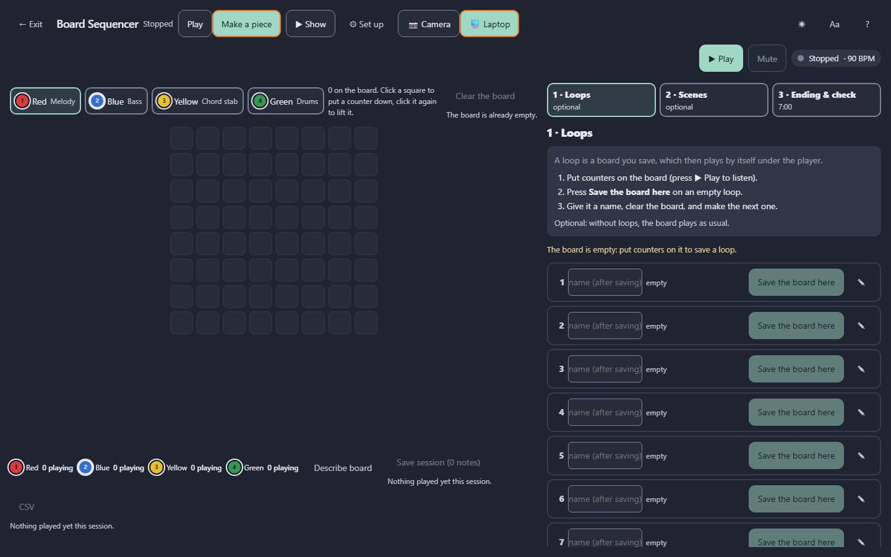
Three rehearsals, one step at a time, with a picture of each screen. By the end the loops are made with Tim, the 7-minute piece is built, the iPad is set up for him, and you've done a full run.
The pictures use the laptop board (squares clicked on screen). With the real board you put the counters on the board instead; everything else is the same.
To start ADMI: in a terminal in the ADMIv3 folder, type npm run show. Open http://localhost:3001 in Chrome, press Board Sequencer, and pick Tim. With the real board, do ⚙ Set up as usual, with the colours' jobs: yellow chords, blue bass, green drums, red melody.
Each loop is one board that Tim makes, saved once. It then plays on its own.
| Loop | Name | Tim puts down | Used for |
|---|---|---|---|
| 1 | Bed | 2–3 yellow counters, in the lower half | Calm chords at the start and the end |
| 2 | Pulse | 1–2 blue counters, low | The bassline |
| 3 | Beat | 1 green counter in a middle row | A medium drum groove |
| 4 | Beat+ | 1 green counter near the top | A busier groove |
| 5 | Shine | 3–4 red counters at different heights | A tune Tim can bring in |
Press Make a piece at the top. The right side becomes the three steps, starting on 1 · Loops, which has eight empty loops.
Each empty loop has a Save the board here button.

For Bed, Tim puts two or three yellow counters in the lower half of the board.
To hear it, press ▶ Play at the top right. Higher rows are higher notes, and left to right is time. Move counters until he likes it.
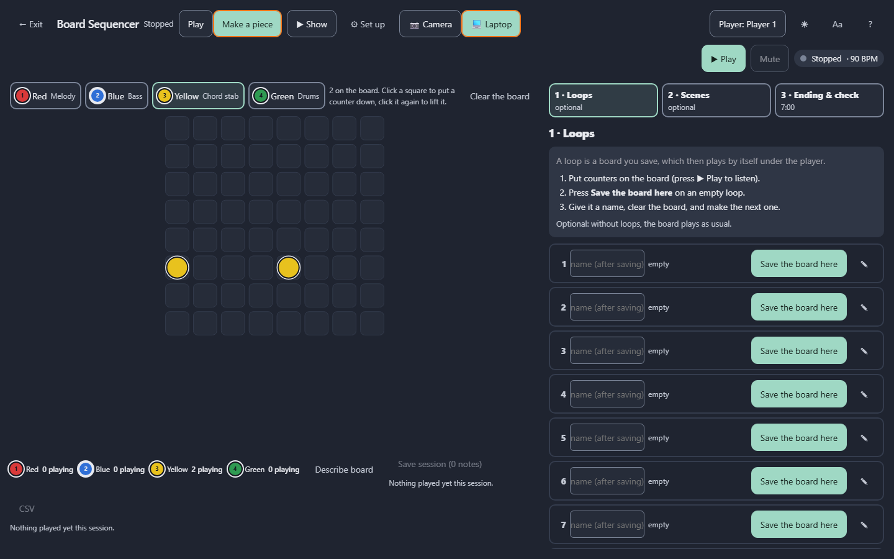
Bed.Loop 1 now shows its name, how many notes it has, and ▶ Play, Replace, ✎ (draw) and ✕ (clear).
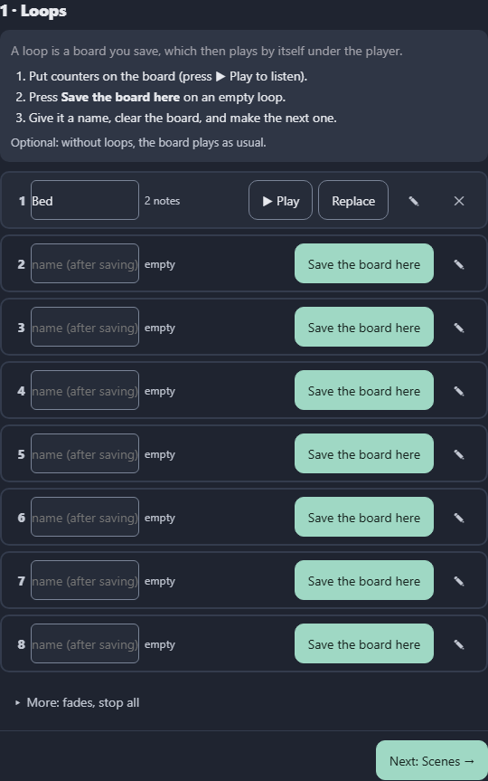
Counters down, listen, Save the board here on the next empty loop, name it, clear. Use the table above for Pulse, Beat, Beat+ and Shine.
Leave loops 6 to 8 empty. During the piece, Capture saves into them.
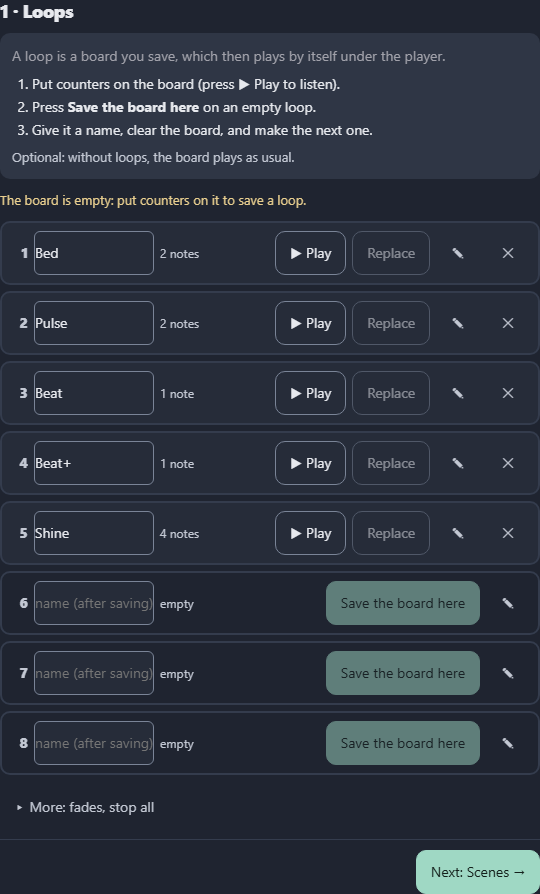
End of rehearsal 1: open step 3 · Ending & check and press ⤓ Back up to a file. Keep the file on a USB stick.
Scenes change the loops and the sound at set times while Tim plays on top. The plan has four scenes: Arrival at 0:00, Build at 1:30, Open at 3:30 and Home at 6:00.
Press Next: Scenes → (or 2 · Scenes at the top), then press ✦ Make my plan.
Four coloured scenes across 7:00, using your loops: Arrival plays Bed; Build adds Pulse and Beat; Open is Tim's solo, with no loops; Home brings Bed back.
Every scene has ▶ From here. While stopped, it plays the piece from that scene's time, so you can rehearse one part without playing seven minutes. When you stop, Tim's own settings come back.
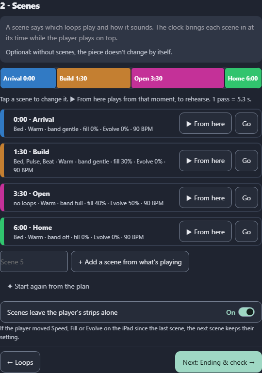
Tap a scene's name to open it. You can change:
1:30;Tap the name again to close it.
Keep the same sound world and tempo in every scene, so the piece sounds like one instrument.
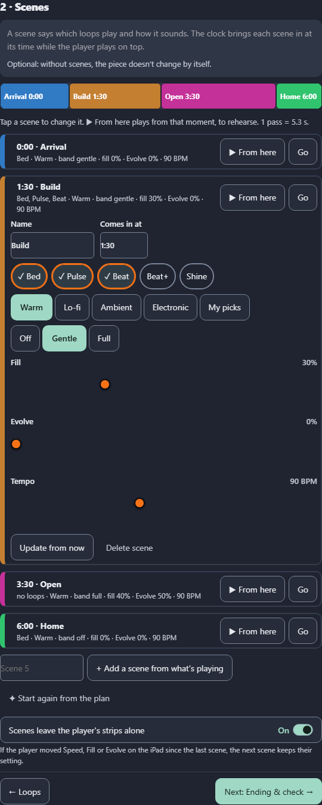
Press Next: Ending & check →, then:
7:00.The Ready check below lists what's ready (✓), what to check (!) and what to fix (✕).
In the picture, the three "!" are expected while testing on the laptop board. On the day, with the real board, npm run show and a backup made, they turn to ✓.
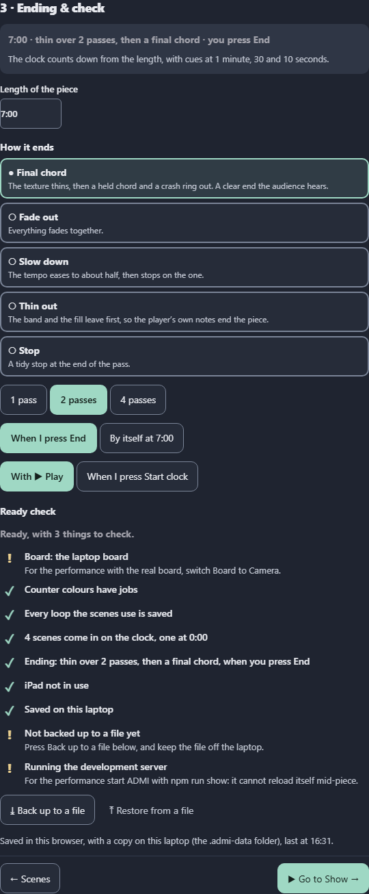
If it says "The iPad can't reach this laptop yet", start ADMI again with npm run show.
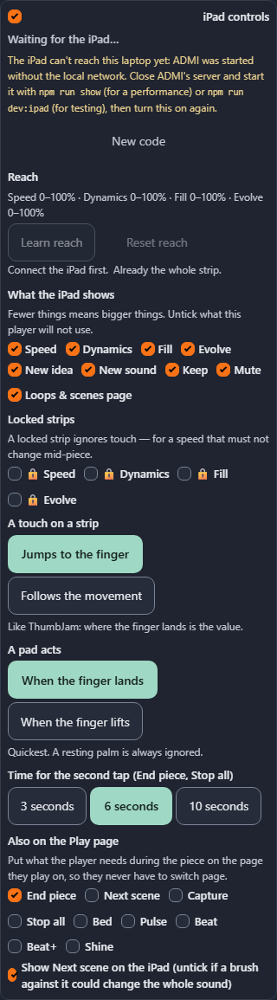
The clock, Now / Next, a beat light, his strips and pads, and a big End piece, which needs two taps.
The 👆 mark at the top left lights whenever the iPad is touched, so you can tell "not touched" from "not working".
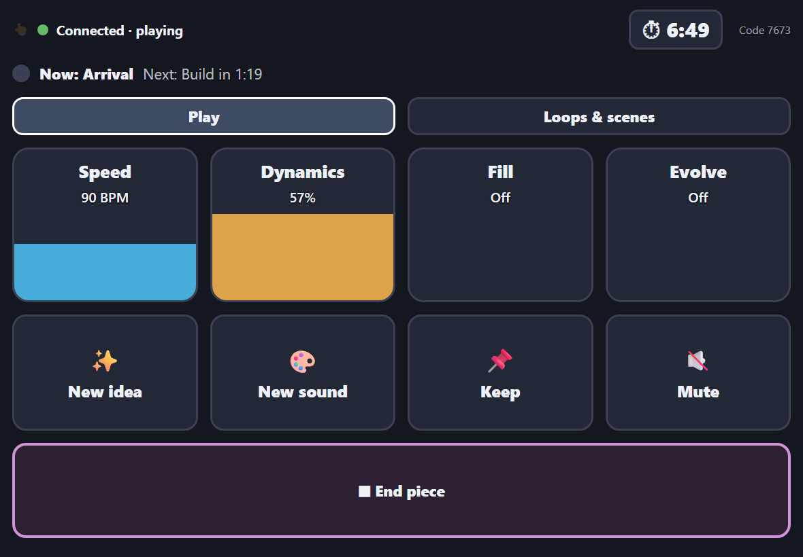
Press ▶ Show at the top. The board fills the screen. Press ▶ Start the piece.
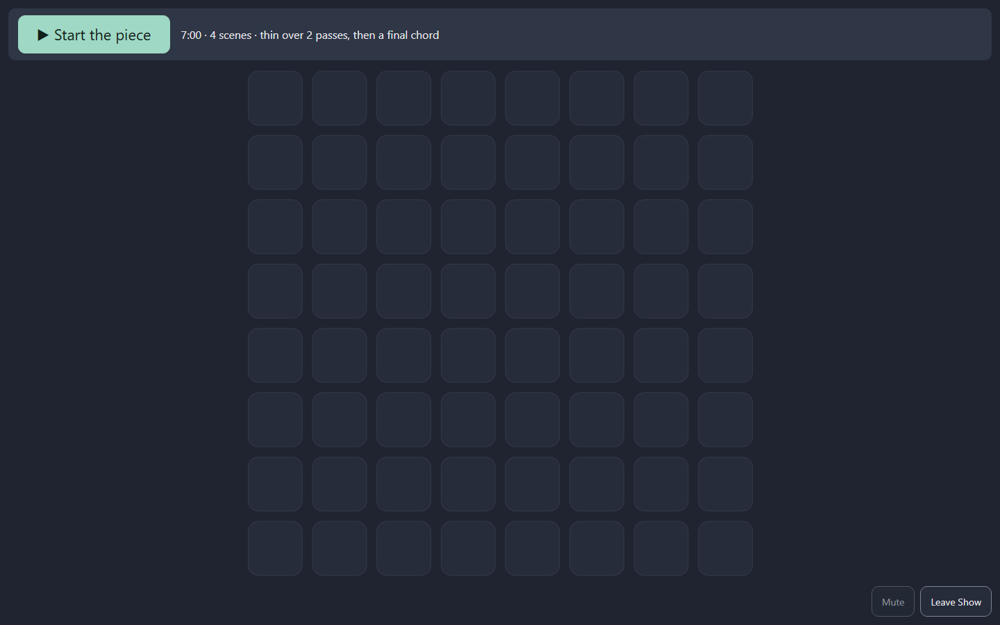
Stop needs two presses during the piece, so one stray tap can't end it. Cancel the ending brings the music back if End was pressed too soon.
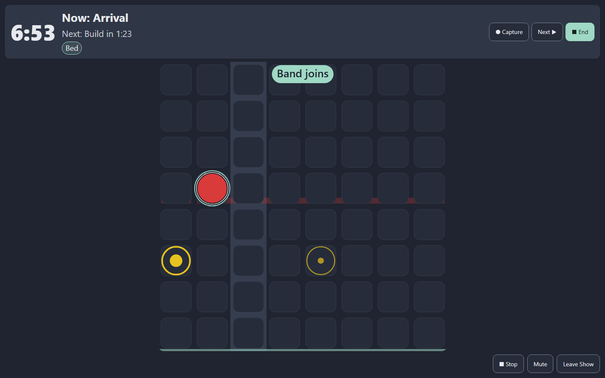